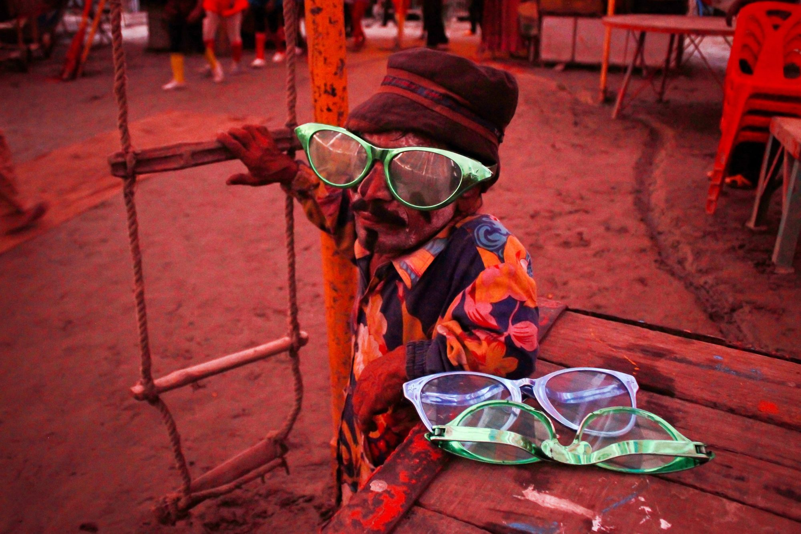
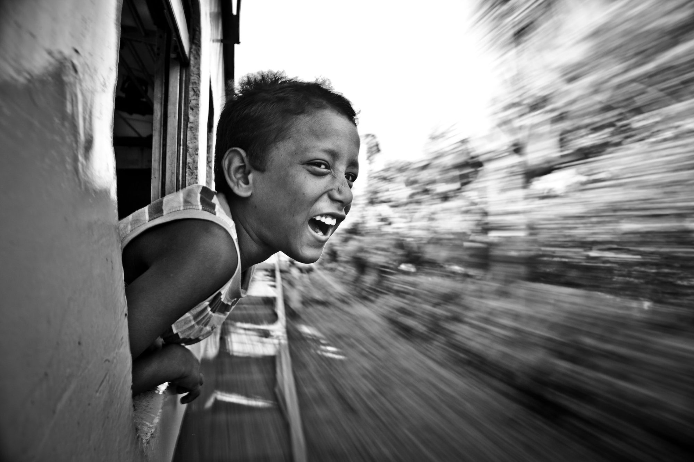
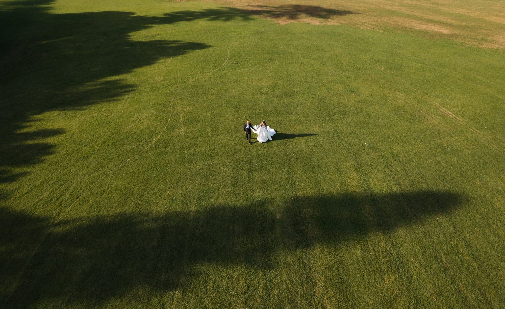

Stay Connected
Write to me directly, book a wedding with Purple Bird Australia, or follow the street work on Flickr.

© S M Imran Hassan / 2026



A Bangladeshi photographer in Australia, telling stories of weddings, everyday life and the street.
For over 15 years I have photographed people as they are: at weddings, on the street and on the road. Every frame is built on a simple promise, to capture life exactly as it feels.
Streets, rivers, festivals and faces from home
Kashmir and Ladakh, India, Europe and Australia
Love stories across Australia, photographed with Purple Bird Australia
Write to me directly, book a wedding with Purple Bird Australia, or follow the street work on Flickr.
© S M Imran Hassan / 2026